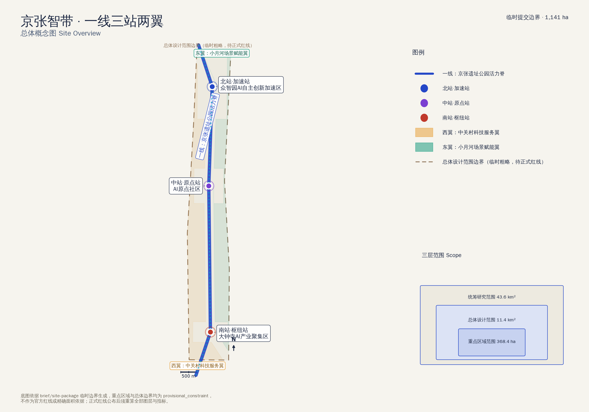
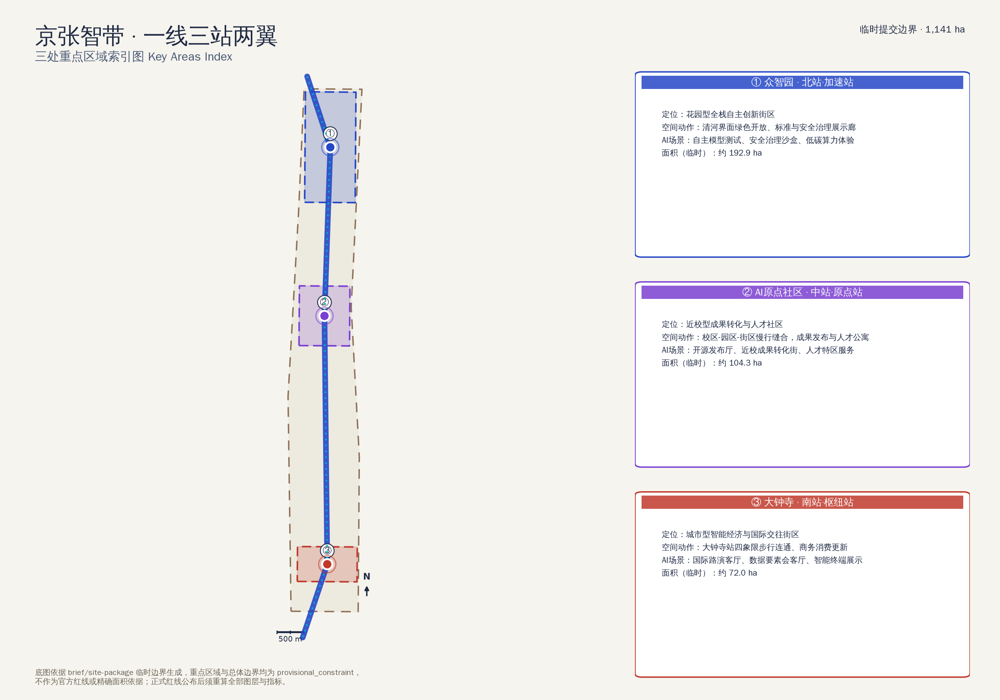
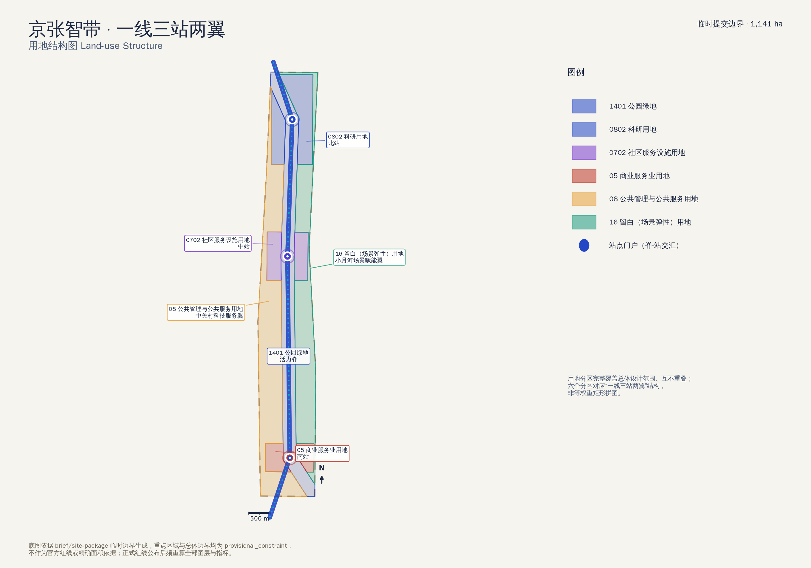
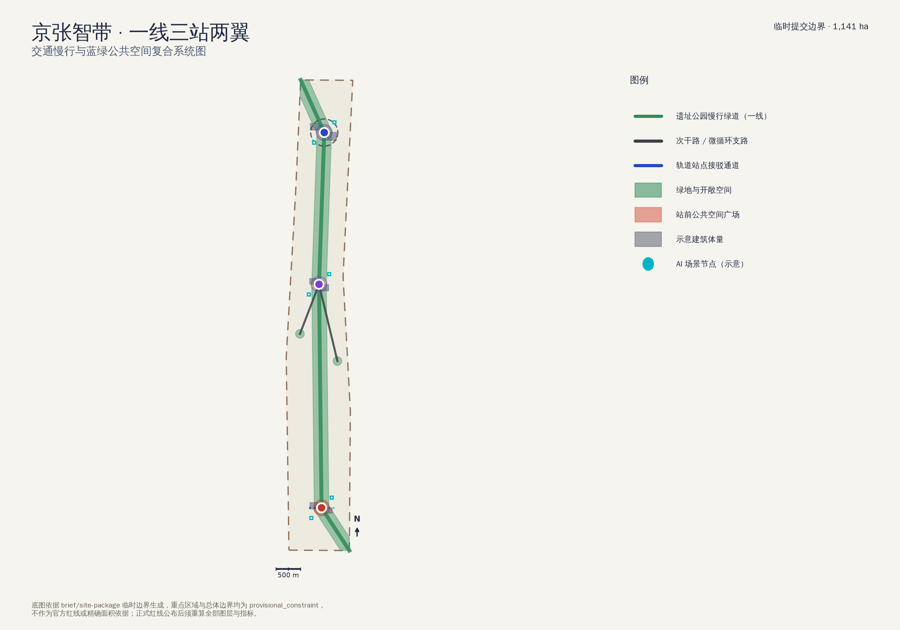
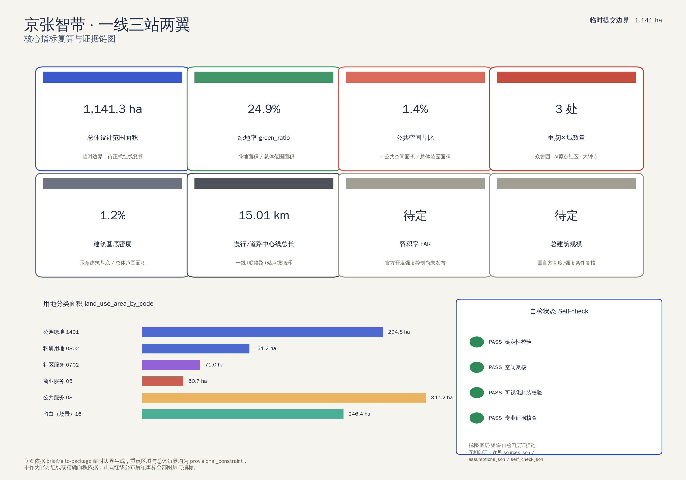

一线三站两翼 · 百年京张AI创新带城市设计（临时提交边界）
京张智带以京张遗址公园活力脊为一线，串联众智园（北站·加速站）、AI原点社区（中站·原点站）、大钟寺（南站·枢纽站）三处重点区域，两侧为中关村科技服务翼（西）与小月河场景赋能翼（东）。总体设计范围边界为临时粗略边界，正式红线公布后须整体复算。

公告确定的三层工作框架：统筹研究范围（产业生态与未来城市形态）、总体设计范围（城市更新与控规深度城市设计）、重点区域范围（三处详细设计）。
三处重点区域详细设计索引；面积为临时边界数值，正式红线公布后复算。

花园型全栈自主创新街区
面积（临时，待正式红线）：约 192.9 ha
近校型成果转化与人才社区
面积（临时，待正式红线）：约 104.3 ha
城市型智能经济与国际交往街区
面积（临时，待正式红线）：约 72.0 ha
用地分区完整覆盖总体设计范围、互不重叠，对应“一线三站两翼”的六个功能分区。

| 分区 | 面积 | 占总体范围比例 |
|---|---|---|
| 1401 公园绿地（活力脊） | 294.8 ha | 25.8% |
| 0802 科研用地（北站） | 131.2 ha | 11.5% |
| 0702 社区服务设施用地（中站） | 71.0 ha | 6.2% |
| 05 商业服务业用地（南站） | 50.7 ha | 4.4% |
| 08 公共管理与公共服务用地（西翼） | 347.2 ha | 30.4% |
| 16 留白（场景弹性）用地（东翼） | 246.4 ha | 21.6% |
一线本身即为慢行绿道主脊，两条联络路分别接入西翼与东翼，南站叠加轨道站点四象限接驳通道，北站设微循环环路。

绿地以活力脊为主体，辅以两翼口袋公园；公共空间集中在三处站前客厅广场，供市民与AI场景共用。
buildings.geojson 为示意建筑体量（现状保留/更新/新建各一到两处），用于表达拆改留逻辑与建筑基底密度，非地块级建筑普查。
近期试点/中期更新/长期治理三档更新项目清单，均为概念建议，非审批实施承诺。
| 编号 | 项目名称 | 类型 | 分期 | 主要依赖 |
|---|---|---|---|---|
| JZ-01 | 遗址公园慢行断点缝合 | 公共空间/交通 | 近期试点 | 道路红线、桥下空间、交通组织复核 |
| JZ-02 | 众智园清河创新界面 | 蓝绿空间/产业展示 | 中期更新 | 河道蓝线、生态与防洪条件 |
| JZ-03 | 原点社区近校成果转化街 | 城市更新/产业服务 | 近期试点 | 校区边界、权属、首层业态 |
| JZ-04 | 大钟寺站四象限步行连通 | 轨道一体化/慢行 | 中期更新 | 轨道站点、道路交叉口、市政管线 |
| JZ-05 | AI公共服务与端侧算力节点 | 新基建/公共服务 | 长期治理 | 能源、算力、安全与运营主体 |
| JZ-06 | 小月河场景开放实验室启动 | 产业测试/运营 | 长期治理 | 留白用地使用协议、场景安全与人工复核机制 |
| JZ-07 | 全球AI活动周公共路线启动 | 运营/品牌 | 中期更新 | 公共空间许可、活动安全、版权清权 |
不少于10张AI场景卡与5类用户画像，说明场景-空间-运营映射与人工复核边界。
区位：中站·AI原点社区
面向高校、开源社区与初创团队的成果发布、代码贡献展示与小型路演空间。
区位：北站·众智园
把标准制定、安全评测、模型红队测试转译为可参观、可预约、可监管的展示与协作节点。
区位：活力脊沿线（示意）
结合公共服务、企业服务与低碳能源策略的新型基础设施原型，服务小微算力临时需求。
区位：京张遗址公园活力脊
用可解释导视与低侵入传感识别慢行断点、拥挤节点与无障碍需求，数据聚合、不做个人画像。
区位：南站·大钟寺
服务智能体、智能终端与内容消费企业的展示、洽谈、媒体发布与国际交流空间。
区位：北站临清河界面
把绿色空间、雨洪管理、步行骑行与AI展示结合，作为众智园的公共客厅。
区位：中站·AI原点社区
面向高校成果转化，组织孵化、展示、法务、知识产权与投融资服务的沿街功能带。
区位：南站·大钟寺
以合规、授权、可审计为前提，展示数据要素与数字资产流通的城市服务界面。
区位：西翼·中关村科技服务翼过渡带
把医疗、教育、法律、生活服务等AI+场景落到可运营的小尺度街区空间，人工复核可用。
区位：东翼·小月河场景赋能翼
留白弹性用地上的可预约AI产业测试验证场地，向企业与公众分时段开放。
区位：一线公共空间系统
串联遗址文化、开源社区、产业展示与国际路演的可步行、可传播体验路线。
| 画像 | 典型需求 | 空间响应 | 自检边界 |
|---|---|---|---|
| 开源开发者 | 发布、协作、测试、社区声誉 | 原点社区开源发布厅、公共代码墙、夜间协作空间 | 不采集个人行为轨迹；活动数据只做聚合统计 |
| 初创团队 | 低成本办公、算力入口、产品试验场 | 众智园共享测试场、端侧算力驿站、安全治理沙盒咨询 | 算力和数据服务需另行授权 |
| 头部企业访客 | 展示、商务、国际接待、人才招聘 | 大钟寺国际路演客厅、轨道站点接驳、南站周边公共空间 | 企业标识与案例须清权 |
| 周边居民 | 通勤、休闲、社区服务、低扰动更新 | 遗址公园慢行环、社区服务嵌入、分级夜间照明 | 不将居民画像用于商业推荐 |
| 高校师生 | 成果转化、跨校协作、日常慢行 | 校区-园区慢行缝合、成果转化驿站、AI教育体验点 | 校园数据和科研成果需授权 |
| 国际观察者/媒体 | 理解叙事、可传播素材、可信证据 | 全球AI活动周公共路线、京张文化导览、公开证据面板 | 传播材料须标注方案性质与数据缺口，不得暗示已获批准 |
本节数值均与 metrics.json 一致，data-metric/data-value 供机器校验。

公告 1.3/1.4/1.5 与面向智能体任务书 agent.1–agent.6 的完整任务响应表，详见 compliance_matrix.json。
| ID | 任务 | 必选 |
|---|---|---|
| 1.3.1 | 构建世界级AI创新生态体系 | 是 |
| 1.3.2 | 建设适配AI新质生产力的新型城市形态 | 是 |
| 1.3.3 | 打造全球AI创新人才向往的高品质城区 | 是 |
| 1.4.1 | 统筹研究范围 | 是 |
| 1.4.2 | 总体设计范围 | 是 |
| 1.4.3 | 重点区域范围 | 是 |
| 1.5.1.1 | 统筹研究范围：AI创新生态体系 | 是 |
| 1.5.1.2 | 统筹研究范围：适配人工智能的未来城市形态 | 是 |
| 1.5.2.1 | 总体设计范围：产业目标与功能布局 | 是 |
| 1.5.2.2 | 总体设计范围：城市更新总体框架 | 是 |
| 1.5.2.3 | 总体设计范围：交通轨道市政配套设施 | 是 |
| 1.5.2.4 | 总体设计范围：京张遗址公园活力带 | 是 |
| 1.5.2.5 | 总体设计范围：城市风貌 | 是 |
| 1.5.3.required | 重点区域范围详细设计必选项 | 是 |
| 1.5.3.1 | 众智园AI自主创新加速区 | 是 |
| 1.5.3.2 | 北京AI原点社区 | 是 |
| 1.5.3.3 | 大钟寺AI产业聚集区 | 是 |
| agent.1 | 一带总体概念与功能统筹方案设计 | 是 |
| agent.2 | AI全栈自主创新体系与世界级AI创新生态设计 | 是 |
| agent.3 | AI+场景赋能新范式与智能化AI活力城市设计 | 是 |
| agent.4 | AI公共空间、智能原生新业态与朝圣地标设计 | 是 |
| agent.5 | 百年京张文化、中关村文化与AI新文化融合叙事设计 | 是 |
| agent.6 | 一带全球AI创新活动体系与长期运营设计 | 是 |
提交前运行的四道本地自检门槛；详见 self_check.json。
PASS 说明包具备进入机器检查与内容评审的基础条件，不代表方案已获官方批准或评审结论。
| ID | 类型 | 用途 |
|---|---|---|
| SITE-PACKAGE | official_public | Project brief, enums, allowed design space, ranges, and schemas. |
| SOURCE-REGISTRY | repository_public_registry | Public/cleared/provisional source usability registry; distinguishes formal-ready, background-only, provisional-only, and needs-review materials. |
| PROCESSED-FACT-PACK | repository_processed_reference | Agent-readable navigation layer for scopes, required tasks, source-use boundaries, and missing-data checklist; not a new authority source. |
| BOUNDARY-SOURCE | agent_inferred_from_public_data | Submitted site boundary geometry source (provisional). |
| KEY-AREA-SOURCE | agent_inferred_from_public_data | Three required detailed-design key area boundaries (provisional). |
| OFFICIAL-ANNOUNCEMENT | official_public | Official announcement tasks, scope levels, key areas, language, and deliverable context. |
| AGENT-TASKBOOK | user_provided_cleared | Agent-facing open-call principles, six required agent tasks, scenario/branding/operation requirements, and boundary clause. |
| ID | 状态 | 说明 |
|---|---|---|
| A-CONTROLS-001 | pending_professional_confirmation | Detailed regulatory controls, road redlines, ownership, municipal utilities, and engineering constraints must be confirmed from official attachments before statutory use. |
| A-LANDUSE-METHOD-001 | design_proposal_method | geometry/land_use.geojson partitions the provisional site boundary into a 300m-wide heritage-park spine, the three official key-area rectangles (net of the spine), and two side wings split by the spine centerline. This is the agent's conceptual zoning method for the 'one line, three stations, two wings' idea, not a statutory zoning map. |
| A-ROAD-WIDTH-001 | design_proposal_method | road_area_sqm and road_ratio in metrics.json are derived from road centerline length multiplied by schematic cross-section widths (greenway 10m, branch 14m, secondary 20m, transit_connection 18m), not from an approved road red-line or ROW. |
| A-BUILDING-ILLUS-001 | design_proposal_method | geometry/buildings.geojson contains six illustrative massing blocks (one to two per station) used to demonstrate retain/renovate/new-build logic and to compute a schematic building_density_ratio; it is not a parcel-level architectural footprint survey. |